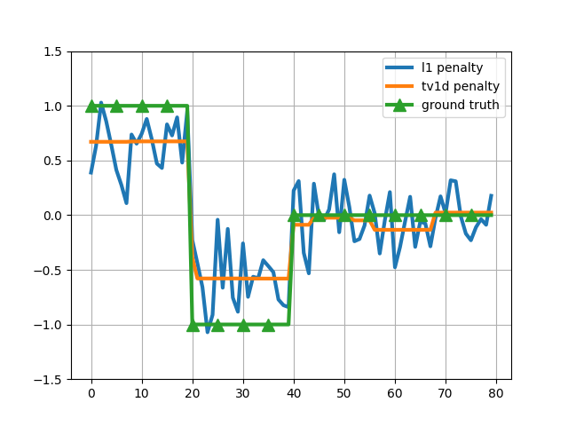

Note
Click here to download the full example code
Signal recovery by 1D total variation¶
In this example, we generate a signal that is piecewise constant. We then observe some random and corrupted measurements from that signal and then try to recover that signal using L1 and 1D total variation (TV1D) penalties.
Given a ground truth vectors, the signal that we observe is given by
y = sign(X ground_truth + noise)
where X is a random matrix. We obtain the vector ground_truth by solving
an optimization problem using lightning’s lightning.classification.FistaClassifier.
The 1D total variation is also known as fused lasso.
# Author: Fabian Pedregosa <f@bianp.net>
import numpy as np
import matplotlib.pyplot as plt
from lightning.classification import FistaClassifier
from sklearn.model_selection import GridSearchCV
# generate some synthetic data
n_samples = 200
ground_truth = np.concatenate((
np.ones(20), - np.ones(20), np.zeros(40)))
n_features = ground_truth.size
np.random.seed(0) # for reproducibility
X = np.random.rand(n_samples, n_features)
# generate y as a linear model, y = sign(X w + noise)
y = np.sign(X.dot(ground_truth) + 0.5 * np.random.randn(n_samples)).astype(int)
for penalty in ('l1', 'tv1d'):
clf = FistaClassifier(penalty=penalty)
gs = GridSearchCV(clf, {'alpha': np.logspace(-3, 3, 10)})
gs.fit(X, y)
coefs = gs.best_estimator_.coef_
plt.plot(coefs.ravel(), label='%s penalty' % penalty, lw=3)
plt.plot(ground_truth, lw=3, marker='^', markevery=5, markersize=10, label="ground truth")
plt.grid()
plt.legend()
plt.ylim((-1.5, 1.5))
plt.show()
Total running time of the script: ( 0 minutes 1.691 seconds)